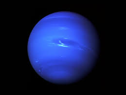

| Planets! | Mars | Jupiter | Venus | Neptune |
|---|---|---|---|---|
| Planets! | |
|
|
 |
| Mass | 6.390 x 10^23 kg | 1.898 x 10^27 kg | 4.867 x 10^24 kg | 1.024 x 10^26 kg |
| Diameter | 6.78 x 10^6 m | 1.43 x 10^8 m | 1.21 x 10^7 m | 4.92 x 10^7 m |
| length of Day | 24.7 hr | 9.9 hr | 2802 hr (a venus day is actually longer than its year!) | 16.1 hr |
| Orbital period | 249.3 days | 4,331 days | 224.7 days | 59,800 days |
| Acceleration due to gravity | 3.7 m/s^2 | 23.1 m/s^2 | 8.9 m/s^2 | 11.0 m/s^2 |
| Number of Moons | 2 moons | 79 moons | 0 moons | 14 moons |
| Escape velocity | 5.0 km/s | 59.5 km/s | 10.4 km/s | 23.5 km.s |